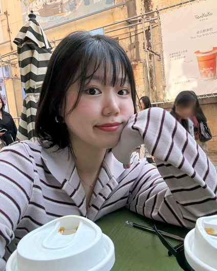
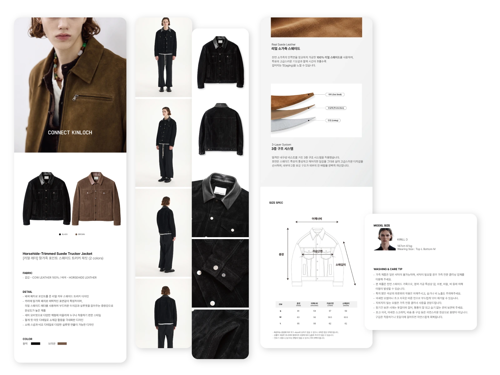
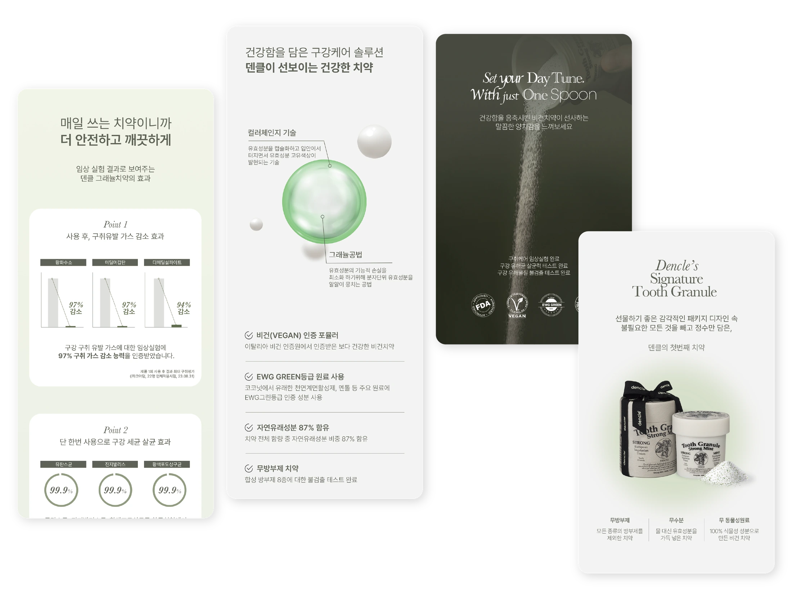

브랜드몰 · 상세페이지
제품의 특징과 구매 흐름에 맞춰 이미지, 정보의 우선순위, 레이아웃을 설계합니다.
패션과 뷰티, 브랜드와 사람 사이.
제품의 매력을 웹과 콘텐츠로 풀어내는 디자이너 권혜지입니다.
WEB & CONTENT DESIGNER
제품의 매력을 이해하고,브랜드에 맞는 화면을 만듭니다.패션에서 뷰티까지.보는 즐거움과 읽는 흐름을함께 디자인합니다.
경력과 활용 도구 보기 ↓
제품의 매력을 이해하고,
브랜드에 맞는 화면을 만듭니다.
패션과 구강케어 브랜드에서 상세페이지, 공식몰 배너, SNS, 프로모션, 인쇄물을 디자인했습니다. 브랜드의 분위기를 유지하면서 채널과 고객에 맞춰 정보의 우선순위를 조정합니다.
패션디자인 전공과 마케팅 실무 경험을 바탕으로, 제품을 이해하고 선택하기 쉬운 웹·콘텐츠 디자인을 지향합니다.
Photoshop · Illustrator · Adobe XD · HTML · CSS
GTQ 1급 · 컴퓨터그래픽스운용기능사 · 웹디자인기능사 · 컴퓨터활용능력 1급
OPIC IH · TOEIC 835
2021.02 패션디자인 전공 졸업
패션 브랜드 웹 콘텐츠·상세페이지 디자인
구강케어 브랜드 온라인 커머스 디자인
마케팅 기획·행사 운영 및 전시 세팅
브랜드와 제품을 보여주는 방식
제품의 특징과 구매 흐름에 맞춰 이미지, 정보의 우선순위, 레이아웃을 설계합니다.
브랜드의 분위기를 유지하면서 채널과 목적에 맞는 콘텐츠와 프로모션 화면을 만듭니다.
제품의 콘셉트와 무드에 맞는 이미지를 탐색하고, 광고와 콘텐츠의 비주얼로 확장합니다.
신상품 촬영 기획 및 현장 촬영 서포트 / 후보정
대표 프로젝트
기존 페이지의 분절된 구성을 정리하고, 착용 이미지와 소재 디테일을 중심으로 정보의 순서를 다시 설계했습니다.
프로젝트 보기
확연히 다른 두 가지 채널 흐름에 맞춰, 상세페이지의 비주얼 콘셉트와 설득의 방식을 완전히 다르게 기획했습니다.
프로젝트 보기
포트폴리오